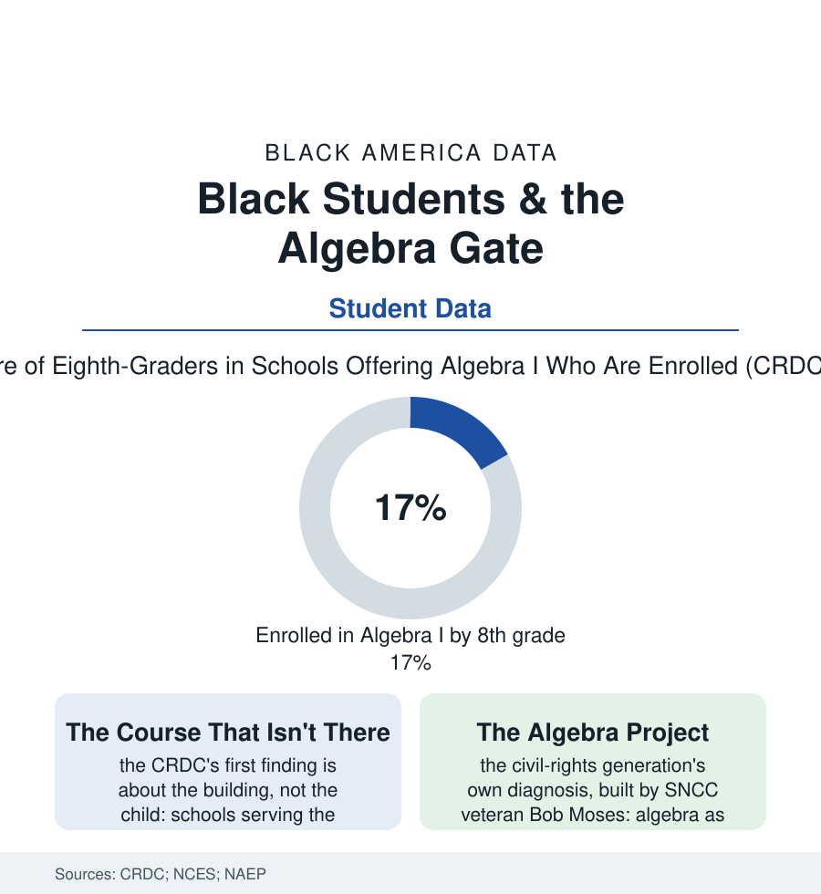

Black Education
The Algebra Gate: Eighth-Grade Math and the Track That Decides the Rest
Algebra I in eighth grade is the hinge of the entire high-school curriculum — and access to it splits by school and race in the federal data. The algebra file.

One course, taken or not taken in the eighth grade, quietly determines the ceiling of an American education: the student who completes Algebra I by middle school can reach calculus by graduation; the student who doesn't, mostly can't — the math sequence is a train on a fixed track, and the switch is thrown at thirteen. The federal data show the switch thrown unevenly: Black students pass through the algebra gate at lower rates, in schools that offer less math to begin with. This article reads the algebra file.
Offered, Enrolled, Passed: Three Different Gaps
The Civil Rights Data Collection decomposes the gap into its three honest parts, and each has a different address: the offering gap (the school's catalog itself — the CRDC finding schools with the highest Black enrollments measurably likelier to lack the full sequence: no calculus in a substantial share, physics and advanced math thin, the gate absent rather than closed), the enrollment gap (within schools that offer it, the placement machinery sorting by prior scores, teacher recommendation, and parental request — the auto-enrollment experiments of the policy file, in which districts that placed by test score instead of by request watched Black and Latino advanced-math enrollment jump in a single year, the cleanest evidence anywhere that a portion of the gap is paperwork, not preparation), and the mastery gap (the NAEP's eighth-grade math rows, where the average Black student's score sits near the white average of a younger grade in the statisticians' careful comparisons — the gap the K-8 file built year by year, the algebra gate merely where it becomes visible and permanent). Behind all three sits the workforce row: the math teacher's credential (the CRDC and NCES counting out-of-field math teaching concentrated, as every shortage in this atlas concentrates, in the majority-Black schools — the algebra class taught by the biology teacher is a statistic before it is an anecdote). The stakes are priced in the completion data: the longitudinal studies following the eighth-grade placement through the earnings file (the calculus-reachers overrepresented in the STEM degrees, the engineering enrollments, and the top earnings quintiles of the adult tables), the gate's shadow extending forty years from a middle-school schedule card.
The Argument About the Gate Itself
The policy world argues about the gate in two directions at once, and the file owes both their evidence: the accelerationists (universal algebra by eighth, auto-enrollment by readiness data, the double-dose supports of the Chicago experiment — whose evaluation found real gains in scores and course passage when the extra period came with, rather than instead of, the standard one) and the readiness school (the California experience's cautionary rows — the state's push for universal eighth-grade algebra raising enrollment while its failure rates indicted the preparation beneath; the backers of the slower sequence pointing to the mastery data's insistence that an F in algebra at thirteen is its own track, to repeating and retreat). The synthesis the districts with results have landed on is visible in the case data: build the elementary arithmetic first (the reading file's Mississippi posture, in numbers), screen with data instead of requests, support the placed student with time rather than wishes — and audit the offering map until no school's catalog is the ceiling. The file's history holds the argument's moral root: the Algebra Project, founded by a Mississippi voting-rights organizer who taught math in Jackson and Cambridge, framed algebra exactly as this data suggests — the gatekeeping literacy of the technological economy, its denial a quiet continuation of the older exclusions by curricular means. The federal government now publishes the gate's operation school by school. What a community does with a published gate is the question the CRDC, to its credit, leaves pointedly open.
Reading the Algebra Data
Algebra at thirteen is where the opportunity structure stops being a metaphor and becomes a schedule: a room, a period, a textbook, a teacher — present or absent, by school, in numbers anyone can download. The files of this section argue about many causes. This one has a timetable, and the timetable can be changed by a school board on a Tuesday.
More in Black Education
Black Educational Attainment: High School Parity, the College Gap
About 89 percent of Black adults hold a high school diploma and one in four holds a bachelor's degree or higher — the attainment ladder, the college completion gap, and the generational trend.
Historically Black Colleges and Universities: Enrollment and Degrees
More than 100 HBCUs enroll roughly 290,000 students and award about one in six Black bachelor's degrees — an outsized share from a small sector. The federal education data.
Black College Enrollment: 2.4 Million Students
About 2.4 million Black students are enrolled in American colleges — nearly two-thirds of them women. The NCES enrollment data by sector, level, and trend.
Source: U.S. Department of Education Civil Rights Data Collection; National Center for Education Statistics; National Assessment of Educational Progress mathematics data.